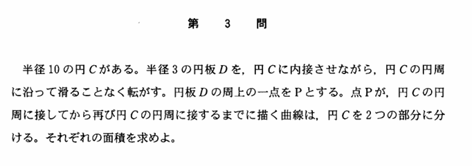

2004年 第3問
積分

分析
単純な問題設定だが、変数を設定し、Pの座標を表し、軌跡の図形を図示し、積分を立式し、積分を解くという多くのステップを踏む必要がある。思考力というよりかは処理問題に近い。
計算がかなり多く、かなりの計算力を要する。受験対策をした人は報われる問題かもしれない。
背景
半径Rの定円の内側を半径rの円が接しながら転がる時(R>r)、円周上の一点が通る軌跡を「ハイポサイクロイド」と言われる。この問題は、$\ R=10,r=3\ $としたときのハイポサイクロイドが囲む面積を求める問題である。
ハイポサイクロイドの媒介変数表示は以下の通りである。なお、単にこの問題と同じ考え方で一般化した以下の式が求まる。
$$x=(R-r)\cos\theta+r\cos\left(\theta-\frac{R}{r}\theta\right)\ ,\ y=(R-r)\sin\theta+r\sin(\theta-\frac{R}{r}\theta)$$
さらに$\ R=2r\ $のとき線分、$\ R=3r\ $のとき「デルトイド」、$\ R=4r\ $のとき「アステロイド」となる。
今回の問題はこれに当てはまらないが、$\ R=nr\ $と表せるとき、ハイポサイクロイドの囲む面積は$\ (n-1)(n-2)\pi r^2\ $で与えられる。
なお、半径Rの定円の外側を半径rの円が接しながら転がる時の円周上の一点が通る軌跡を「エピサイクロイド」という。